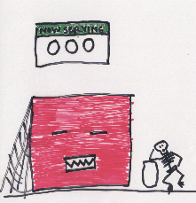

1994 MIT Student Workshop on Scalable Computing
Affirmative: Round 2
Ellen Spertus
Fortune 500 Needs
- Desktop business applications
- Word processors
- Spreadsheets
- Email
- Distributed applications
- Document sharing
- Databases
- personnel
- accounting
- inventory
- customer records
Key Criteria for Companies
- Cost
- Scalability
- System availability
- Software availability
Cost
- Price/performance
- Old hardware can be used
- Development time
Scalability
- The importance of prototyping
- Successful systems get used even more
- Can expand for needs of future applications
Availability
- Reliability
- Heterogeneity

Software
Factors Inhibiting ISV Support for MPPs
- Low market volumes (1992)
- shipped: 463
- installed base: 2219
- Niche-oriented markets
- Cost of software development
- Cost of maintenance
- Immature system software and limited development tools
The World Cup
- Hardware
- 1000 Sun workstations (scalable)
- 10 cities (physically distributed)
- Feature: News service
- World Cup history
- Up-to-the-minute statistics
- Full-motion video
Return to affirmative arguments